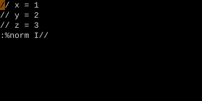

Normal (:norm)
Run normal mode keystrokes from Ex.
:normruns a sequence of normal mode keystrokes on each line in a range. Combine with:gfor surgical bulk edits — anything you can do with keys, you can do over thousands of lines.
Normal
:norm (or :normal) runs a string of normal mode keys on every line in the range. It's the bridge between Ex's bulk processing and normal mode's surgical edits.
| Command | Effect |
|---|---|
:%norm A; |
Append ; to every line in file |
:'<,'>norm I// |
Comment out the visual selection |
:g/TODO/norm dd |
Delete every line containing TODO (= :g/TODO/d) |
:5,10norm @q |
Run macro q on lines 5–10 |
:%norm! 0xx |
Strip 2 chars from start of every line, ignoring user mappings |
Worked example — :%norm I//
Run a normal mode sequence on every line.

:%norm prefixes every line with // .
Like a macro that doesn't need recording. Combine with :g for selective application.
Watch
See also: Global (:g) and Vglobal (:v), Ex Ranges, Recording and Playing Macros